Sistemas de Referencias de Coordenadas
Introducción a la Tecnología de Información Geográfica (IMSE1014)
1 Introducción
En este laboratorio, el estudiante explorará los efectos de varias proyecciones geográficas en las características de un mapa usando QGIS. QGIS es un software de sistema de información geográfica gratuito y de código abierto que se puede utilizar para visualizar, consultar y analizar información espacial.
Este taller se centrará principalmente en las distorsiones de forma y área, además se examinarán las proyecciones útiles para el mapeo a escala global y a nivel nacional.
Este taller incluye las siguientes actividades:
Actividad 1: Configuración de proyecciones geográficas y sistemas de coordenadas en QGIS DesktopActividad 2: Explorar las proyecciones geográficas nacionalesActividad 3: Explorar las proyecciones de mapas nacionalesActividad 4: Explorar el sistema de coordenadas Universal Transversal de Mercator (UTM)
1.1 Objetivo
- Explorar y comprender las proyecciones geográficas y los sistemas de referencias de coordenadas (SRC)
2 Datos
Los datos para el taller los debe descargar desde acá
3 Contexto
La proyección geográfica es una parte fundamental del proceso de mapeo y proporciona la columna vertebral o el marco para la creación de mapas. Es importante que el especialista en SIG comprenda las cualidades de la región mapeada que se conservan en una proyección dada, y las cualidades que se distorsionarán o sesgarán. Además, para los cartógrafos, la selección de una proyección de mapa apropiada es una parte crucial del proceso de diseño del mapa. Esto es porque todos estamos acostumbrados a ver diferentes partes del mundo mapeadas usando proyecciones estándar específicas que hacen que estas áreas “se vean bien”.
La transformación de la forma elipsoide de la tierra en una superficie bidimensional no se puede lograr sin algún elemento de distorsión, por corte, desgarro o compresión (como se discute en el texto). Para mapear áreas pequeñas de la Tierra (mapeo a gran escala), la proyección no es un problema importante, pero a medida que la escala se hace más pequeña, como en el mapeo de continentes o subcontinentes, la distorsión se convierte en un factor significativo. La distorsión del área, la forma, la distancia y la dirección se convierten en propiedades a considerar. Es imposible para una proyección mantener todas estas propiedades simultáneamente.
Las proyecciones se clasifican según las propiedades que conservan. Los mapas de áreas iguales (o equivalentes), por ejemplo, preservan las relaciones de área, pero tienden a perder la conformidad (preservación de la forma). Las proyecciones conformes, por otro lado, mantienen la forma sobre áreas pequeñas pero producen distorsión de área. En el mapeo temático, es importante mantener las propiedades correctas del área. Por lo tanto, la forma a veces se ve comprometida por la elección de una proyección equivalente. Para mapas a pequeña escala, de hecho, la conformidad no puede mantenerse en toda el área; más bien, la proyección puede conservar la forma mejor a lo largo de una línea estándar, con una distorsión de la forma que aumenta con la distancia desde la línea. Otra propiedad a considerar es la preservación de la distancia (equidistancia), que preserva las mediciones de distancia a lo largo de grandes arcos circulares. Finalmente, la preservación de la dirección (azimutalidad) mantiene la dirección correcta desde un punto central a todos los demás puntos.
Hay cientos de posibles proyecciones para elegir. Algunas distorsionan menos de ciertas maneras que otras. Depende del diseñador del mapa seleccionar la proyección que produce la menor cantidad de distorsión. Muchos paquetes de software de mapeo informático ahora permiten al especialista en SIG cambiar fácilmente entre varias proyecciones, lo que permite elegir la más adecuada. En la selección de una proyección, se deben considerar varios elementos clave:
Propiedades de proyección:¿son las propiedades de la proyección adecuadas para el propósito del mapa? Considerando las propiedades de forma, distancia, dirección y área, ¿cuáles deben conservarse y cuáles pueden sacrificarse? ¿O es el compromiso de los cuatro la mejor opción?Patrones de deformación:¿es aceptable la cantidad de deformación?Centro de proyección:¿puede la proyección centrarse fácilmente en el área que se está mapeando?Familiaridad:¿la apariencia del mapa es reconocible para el lector de mapas o va en detrimento del propósito del mapa?
4 Actividades
4.1 Actividad 1: configuración de proyecciones cartográficas y sistemas de coordenadas en QGIS
En esta acividad, explorará los efectos de varias proyecciones sobre las características de un mapa. Nos centraremos principalmente en distorsiones de forma y área. Examinaremos las proyecciones útiles para el mapeo a escala global.
En el Taller 2, agregó datos a QGIS Desktop. Aquí abrirá un proyecto QGIS existente.
Abra QGIS Desktop.
En QGIS Desktop, abra el proyecto, “Proyecto_vista_mundo.qgs” haciendo clic en Proyecto | Abierto. Debería ver el mapa que se muestra en la Figura a continuación.
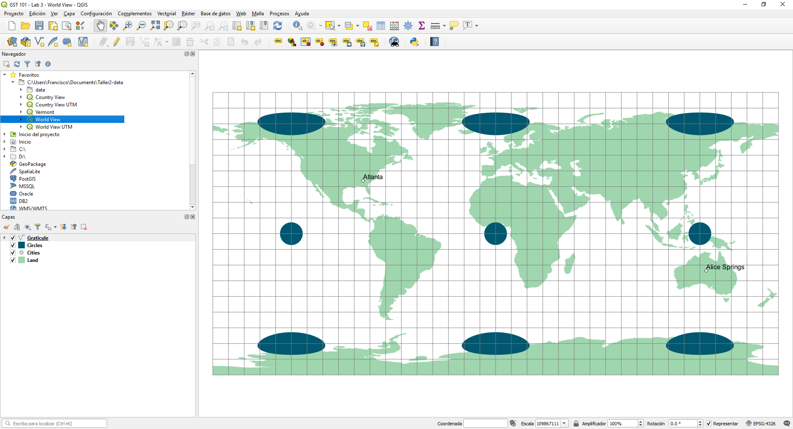
“Proyecto_vista_mundo.qgs” es un archivo de proyecto QGIS. Un archivo de proyecto contiene información sobre un mapa, como: lista de capas, sistema de coordenadas, símbolos, etiquetas, herramientas personalizadas, elementos de mapa y mucho más.
Una capa SIG individual en el Panel de Capas se conoce como tema. En el archivo del proyecto, hay dos temas de polígonos: Circulos y Tierra; un tema de punto: Ciudades, y un tema de línea: Grilla. Si estos círculos se mostraran en un globo, serían círculos perfectos. Aquí puede comenzar a visualizar la distorsión en la proyección por la distorsión en el tema Circulos. En este mapa, no se ha elegido una proyección en QGIS Desktop. El software utiliza la latitud y la longitud medidas en grados decimales geodésicos, que muestran un sistema simple de coordenadas rectangulares en el que la longitud de un grado es constantemente igual a un grado de latitud. En QGIS, cuando aún no se ha seleccionado una proyección, los cálculos de distancia siguen siendo verdaderos, ya que el software calcula la distancia utilizando las coordenadas esféricas de latitud y longitud a lo largo de un gran arco circular, como si realmente estuviera midiendo en la superficie de la Tierra. Aunque el usuario aún no ha elegido una proyección, la pantalla es esencialmente una proyección de Plate Carrée. En una proyección que conserva la forma, los polígonos en el tema Círcles deberían aparecer como círculos de iguales dimensiones. En una proyección Plate Carrée, la escala es lineal, el área y la forma se distorsionan cada vez más hacia los polos, como se demuestra con el tema Circulos.
Los círculos se usarán en este ejercicio para ilustrar la distorsión de área y de forma que ocurre con varias proyecciones. Si bien este método no cuantifica realmente la distorsión, como lo hace la indicatriz de Tissot, sí muestra visualmente la inclinación, desgarro y corte que ocurre con ciertas proyecciones.
Primero examinaremos las unidades de mapa y las unidades de distancia establecidas para este mapa no proyectado.
- En la barra de menú, seleccione Proyecto | Propiedades de Proyecto.
- Haga clic en la pestaña SRC para ver la información del Sistema de referencia de coordenadas para el archivo del proyecto (que se muestra en la figura a continuación).
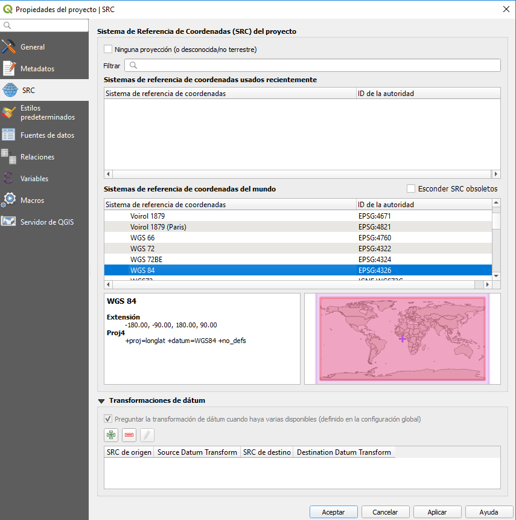
Observe que el sistema de coordenadas seleccionado está configurado en WGS 84, que es un sistema de coordenadas no proyectado.
- Haga clic en Cancelar para cerrar el cuadro de diálogo Propiedades del proyecto.
Ahora haremos algunas mediciones de distancia en este mapa para una comparación posterior con los mapas en los que se establece una proyección.
- Haga clic en la herramienta Medir línea,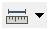, en la barra de herramientas Atributos. Aparecerá el cuadro Medida (figura a continuación).
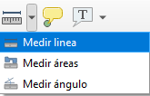
Haga clic en el punto de
Atlanta, en los Estados Unidos.Mueva el cursor al punto de
Alice Springs, Australia, luego haga clic derecho para finalizar la línea. La distancia entreAtlantayAlice Springsse mostrará en métrica en el cuadro Medida (Figura siguiente).
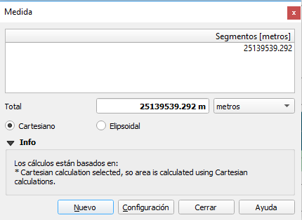
La distancia medida es de unos 25.300 kilómetros (su distancia puede variar ligeramente). Esta no es la distancia real entre Atlanta y Alice Springs. Dado que QGIS está midiendo de acuerdo a la proyección en un sistema cartesiano. Lo que debería hacer es medir a Alice Springs dirigiéndose hacia el oeste desde Atlanta en lugar de hacia el este, como lo definió, ya que dirigirse hacia el Oeste es una distancia más corta que hacia el Este. Sin embargo, QGIS no sabe que el mundo es redondo, por así decirlo. QGIS por defecto tiene activada la transformación sobre el vuelo (TSV), esto es, trata el sistema de coordenadas como un sistema de coordenadas basado en el mundo seleccionado. Esta vista no mantiene mediciones de distancia esféricas y distorsiona la forma, la dirección y el área.
Digamos a QGIS que, de hecho, estamos trabajando con un sistema de coordenadas basado en el mundo y que deseamos medir en un mundo redondo.
En la ventana de medida seleccione la opción
ElipsoidalUsando la herramienta Medir, mida la distancia entre Atlanta y Alice Springs nuevamente (Figura siguiente).
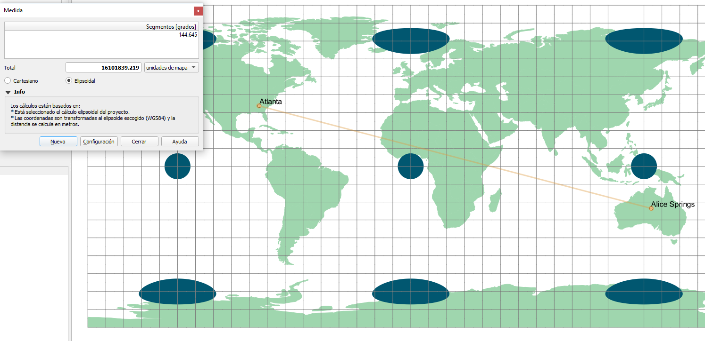
La distancia medida es de aproximadamente 16.000 kilómetros (su distancia puede variar ligeramente). Esta es la distancia real entre Atlanta y Alice Springs. Esta vista mantiene las mediciones de distancia esféricas, pero distorsiona la forma, la dirección y el área.
Cambiemos la proyección en esta vista a la proyección de Mercator.
Abra las Propiedades del proyecto y seleccione la pestaña SRC
En el cuadro Filtro, escriba
3395, que es el código EPSG para el sistema de coordenadas proyectadas WGS 84 / World Mercator. Esto filtra la larga lista de sistemas de referencia de coordenadas para que podamos encontrar fácilmente el que estamos buscando.
Los códigos EPSG son códigos únicos para cada sistema de proyección / coordenadas. Para obtener más información sobre los códigos EPSG, visite http://epsg.org/.
- Seleccione WGS 84 / World Mercator de la lista filtrada del Sistema de referencia de coordenadas (Figura a continuación).
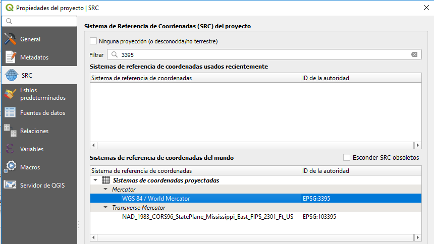
- Haga clic en Aceptar para ver el mapa. Debería ver el mapa que se muestra en la Figura a continuación.
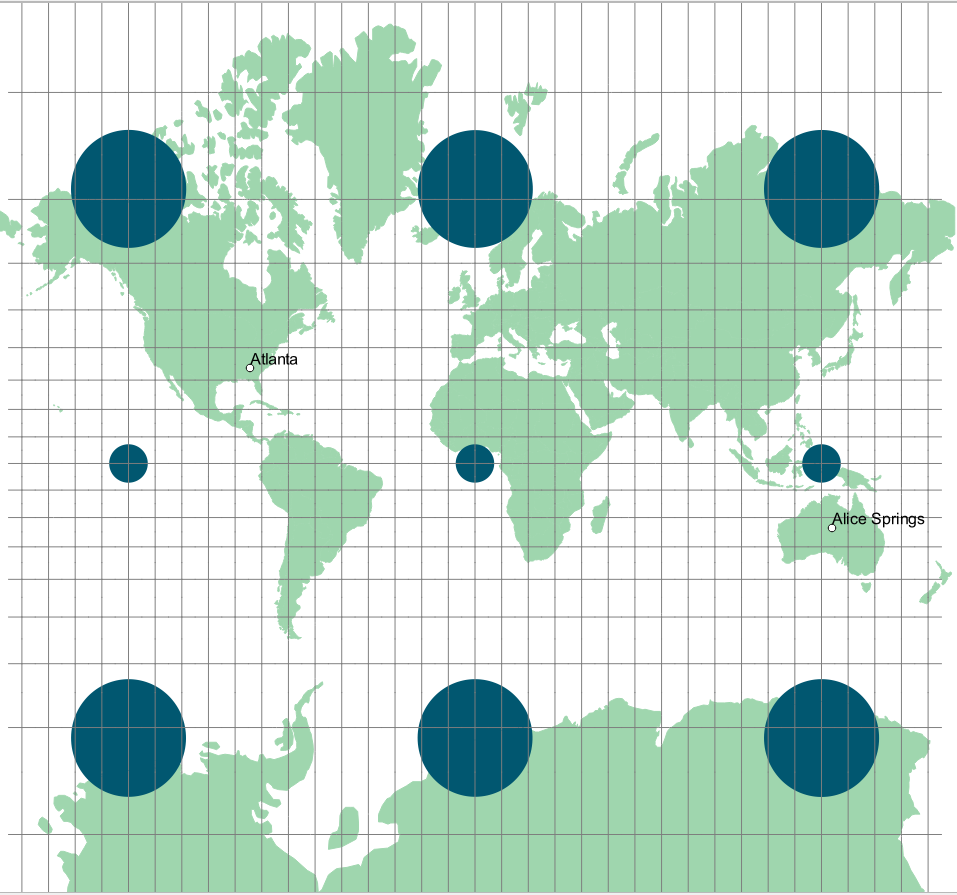
La proyección de Mercator, una proyección conforme (excepto en los polos), tiene meridianos rectos y paralelos que se cortan en ángulos rectos. La escala es más real a lo largo del ecuador y se distorsiona más en las latitudes más altas, como lo demuestra el tamaño creciente de los círculos. La proyección de Mercator fue diseñada para la navegación marina y ofrece todas las líneas rectas en el mapa como líneas de rumbo constante de la brújula. Sin embargo, para mapas temáticos a escala global, el Mercator tiene demasiada distorsión de área para un uso preciso.
El Mercator es la mejor proyección a gran escala de áreas en latitudes bajas. Los mapas a pequeña escala tienen mucha distorsión del área y la distancia.
El mapa de Mercator es mucho menos deseable para mapear continentes que otras proyecciones, ya que tiene una distorsión significativa y puede promover conceptos geográficos erróneos. En general, los mapas rectangulares no se recomiendan para mapear el mundo. La equivalencia (la propiedad del área igual) y la conformidad se conservan mejor utilizando mapas no rectangulares.
4.2 Actividad 2: Exploración de proyecciones de mapas mundiales
Examinemos una proyección cartográfica más adecuada para cartografiar el mundo entero: la proyección Eckert IV. La proyección cartográfica Eckert IV es una proyección cartográfica pseudocilíndrica de área igual con líneas de latitud paralelas rectas y meridianos igualmente espaciados.
Cambiemos la proyección en esta vista a la proyección Eckert IV.
Abra las Propiedades del proyecto y seleccione la pestaña SRC.
En el cuadro Filtro, escriba Eckert. Esto filtra la larga lista de sistemas de referencia de coordenadas para que podamos encontrar fácilmente el que estamos buscando por nombre.
Seleccione
Eckert IV / World_Eckert_IVde la lista filtrada del Sistema de referencia de coordenadas.
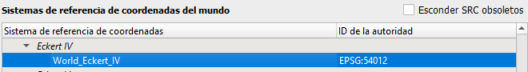
- Haga clic en Aceptar para ver el mapa. Debería ver el mapa que se muestra en la Figura a continuación.
-Nota: Debido a problemas ocasionales de representación, el mapa proyectado puede verse “bloqueado”. Si esto sucede, acercar o cambiar temporalmente el SRC a otro SRC y viceversa a veces solucionará el problema.
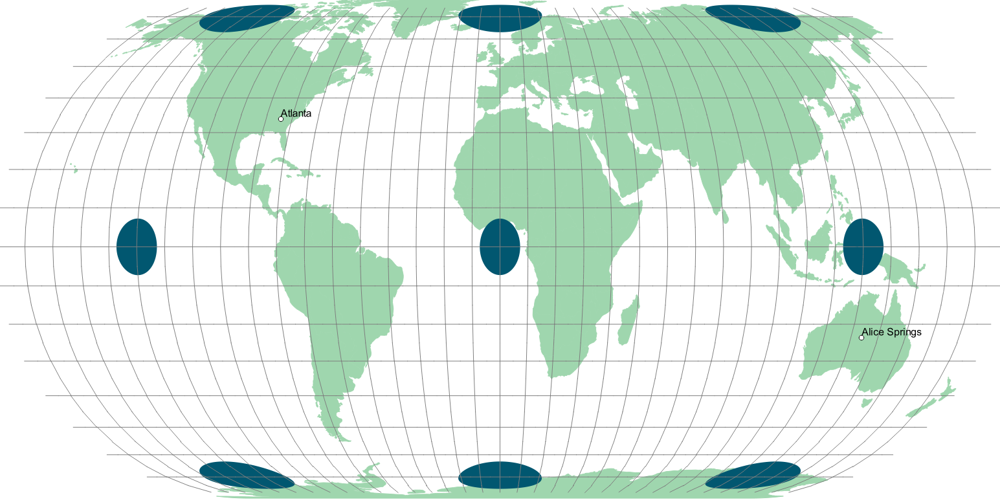 El Eckert IV es útil para mapas mundiales, ya que es de área igual y es agradable a la vista. Sus paralelos estándar están a 40°30’N y 40°30’S. Este mapa solo está libre de distorsiones donde los paralelos estándar se cruzan con el meridiano central.
Veamos cómo le va a las propiedades de distancia.
- Usando la herramienta Medir, mida la distancia desde Atlanta a Alice Springs.
La distancia mide aproximadamente 20.848 kilómetros. Por lo tanto, el Eckert IV no es una proyección equidistante y no debe usarse para medir distancias.
Examinemos ahora la proyección Azimutal equidistante. La característica principal es que la distancia y la dirección son precisas desde el punto central. Esta proyección puede admitir todas las orientaciones: ecuatorial, polar y oblicua. El mundo se proyecta sobre una superficie plana desde cualquier punto del globo. Aunque todas las orientaciones son posibles, la más habitual es la orientación polar, en la que todos los meridianos y paralelos se dividen en partes iguales para mantener la propiedad equidistante. Las orientaciones oblicuas centradas en una ciudad también son frecuentes.
Abra las Propiedades del proyecto y seleccione la pestaña SRC.
Seleccione el sistema de referencia de coordenadas
North_Pole_Azimuthal_Equidistant.Debería ver el mapa de la siguiente forma
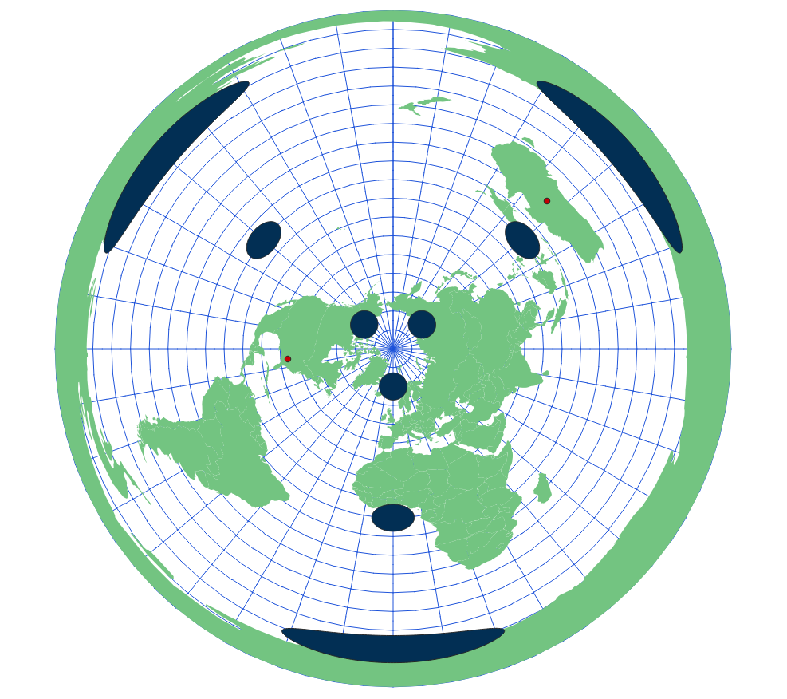
- Esta proyección es utilizada por las personas que quieren creer que la tierra es plana, sin embargo se ve plana por que es una proyección de la tierra en un plano.
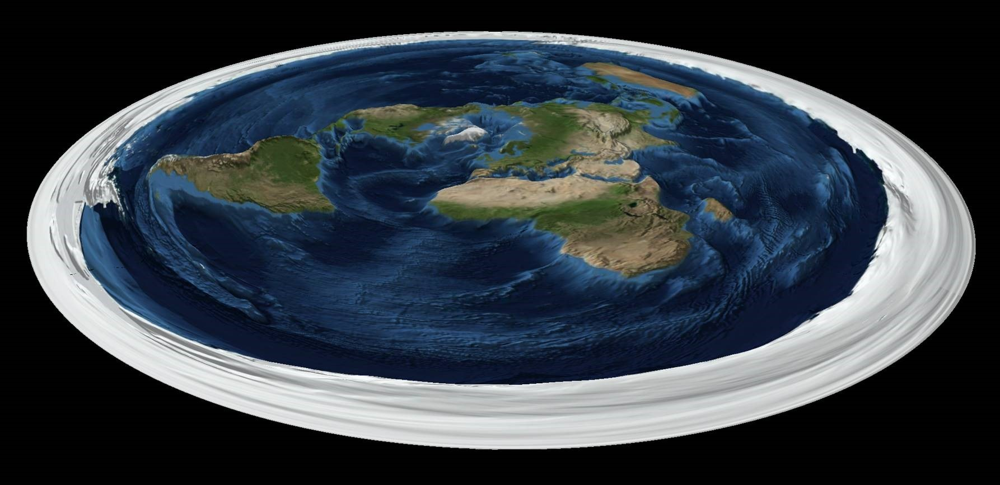
4.3 Actividad 3: Explorar las proyecciones de mapas nacionales
Las proyecciones adecuadas para cartografiar el mundo no son necesariamente las mejores para cartografiar áreas más pequeñas, como continentes o países. Al mapear a tal escala en las latitudes medias, es importante usar una proyección que se centre en el área que se está mapeando y que tenga una línea o líneas estándar que atraviesen el área que se está mapeando.
En esta actividad veremos un mapa de Chile utilizando algunas proyecciones diferentes y circulos como los de tissot.
- En QGIS Desktop abra las capas
limites_chileytissot_circles_chiledel archivogeopackageTissot_Chile.gpkg(Figura siguiente).
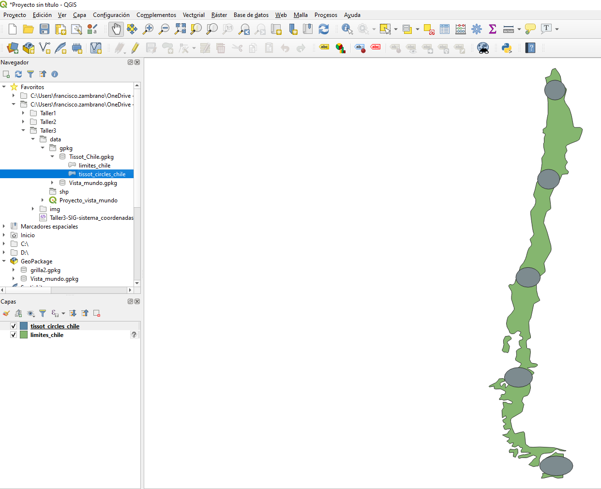
Es un mapa de los límites de Chile y cinco circulos de tissot.
La propiedad de distancia es más difícil de juzgar. La distancia conocida entre Los Ángeles y Nueva York es de aproximadamente 3.962 kilómetros. Veamos cómo el mapa no proyectado controla la distorsión de distancia.
Al lado derecho de la capa
limites_chileaparece un signo de interrogación, esto indica que hay un problema con la capa. En este caso no tiene definida una proyección.Haga clic en el signo de interrogación y definale la proyección, en este caso el SRC que le corresponde es epsg:4326 que correspondo al datum WGS84 y coordenadas geográficas.
Mida la distancia entre el centro del circulo que se encuentra en el extremo norte y el centro del circulo que se encuentra en el extremo sur. Aprecie la diferencia entre la medida en
CartesianoyElipsoidal. ¿A qué se debe? Anoté la distancia de la proyección (cartesiano) y el SRC en una tabla.Debe completar la siguiente tabla con: 1) la distancia entre el centroide de los circulos en el extremo norte y sur, y 2) el área de Chile; con las diferentes proyecciones que vamos a ir analizando.
| SRC | Distancia (km) | Área (há) |
|---|---|---|
| Elipsoidal | ||
| WGS84 | ||
| Eckert IV | ||
| Conica Equidistante Sudamérica |
En la barra de menú, seleccione Proyecto | Proyecto de Propiedades.
Haga clic en la pestaña SRC.
Seleccione el sistema de coordenadas WGS 84 de la lista de Sistemas de referencia de coordenadas del mundo (Figura siguiente).
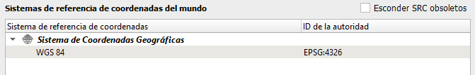
Haga clic en Aceptar para ver el mapa.
Mida la distancia entre el centro del circulo ubicado en el extremo norte y el del extremo sur. La distancia que se obtiene con la proyección debe ser de alrededor 3833 km y la distancia real (en linea recta) de aproximadamente 3821. Aunque estamos utilizando una sistema de
Plate carre.
Ahora proyectaremos los datos utilizando la proyección Eckert IV. El Eckert IV hizo un buen trabajo con todo el mundo, pero veremos cómo le va con un solo país de latitud sur.
Abra las Propiedades del proyecto, seleccione la pestaña SRC y elija World_Eckert_IV del cuadro de sistemas de referencia de coordenadas recientemente utilizado.
Haga clic en Aceptar para configurar el SRC (Figura siguiente).
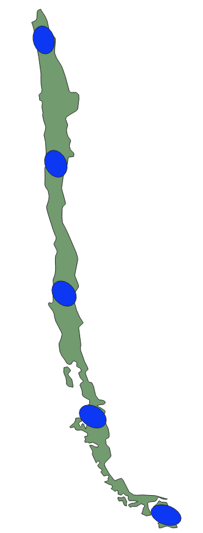
Claramente, hay una gran distorsión al usar esta proyección. Parte del problema radica en el hecho de que esta proyección se centra en 0 grados de longitud. Centremos la proyección en Chile creando un SRC personalizado basado en la proyección World_Eckert_IV.
Haga clic en Configuración | SRC personalizado … desde la barra de menú. Esto abrirá el cuadro de diálogo Definición del sistema de referencia de coordenadas personalizadas.
Haga clic en el botón Copiar SRC existente para abrir el Selector del sistema de referencia de coordenadas.
Seleccione World_Eckert_IV de la lista utilizada recientemente. Asegúrese de que los parámetros de SRC se muestren en la parte inferior del selector. De lo contrario, seleccione temporalmente un SRC diferente, luego seleccione World_Eckert_IV nuevamente (consulte la Figura a continuación).
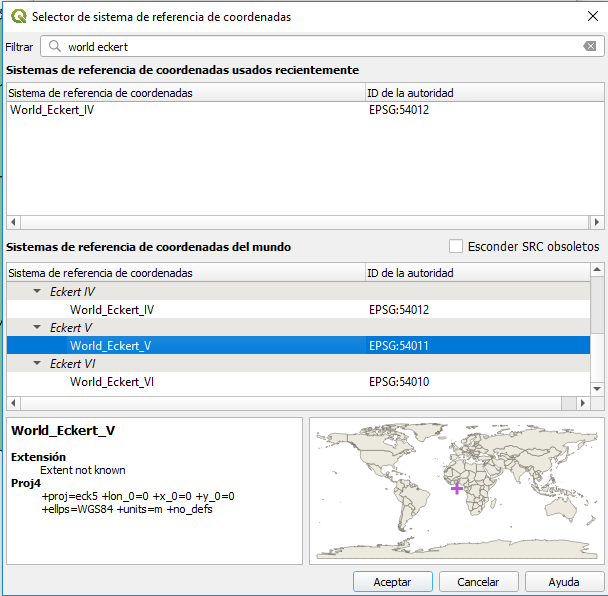
- Haga clic en Aceptar para volver al cuadro de diálogo Definición de SRC personalizado. Los parámetros ahora se completarán con los parámetros SRC copiados (que se muestran en la figura a continuación).
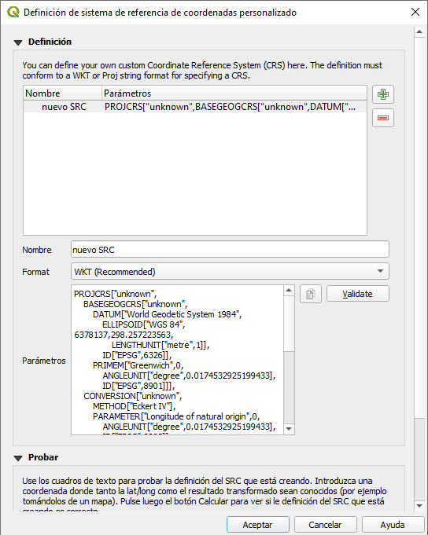
Necesitamos cambiar el meridiano central para que la proyección esté centrada a -72,000 grados de longitud en lugar de 0,000. Esto centrará la proyección en el centro del país.
Para lograr esto, reemplace `“Longitude of natural origin”,0`` con “Longitude of natural origin”,-72, (esencialmente reemplazando el meridiano central de 0 con -72.0).
En el cuadro “Nombre”, ingrese Chile_Eckert_IV. Esto servirá como un nombre de nuestro nuevo SRC personalizado.
Haga clic en Aceptar.
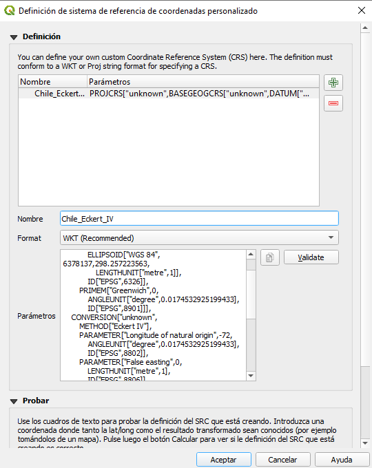
Nuestro SRC personalizado ahora se agregará a QGIS para que lo podamos utilizar.
Ahora elegiremos nuestra proyección Chile_Eckert_IV para ver cómo proyecta nuestro mapa.
Abra las Propiedades del proyecto, seleccione la pestaña SRC.
En la lista “Sistemas de referencia de coordenadas del mundo”, desplácese hasta el final hasta que vea
Sistemas de Coordenadas Definidas por el Usuario
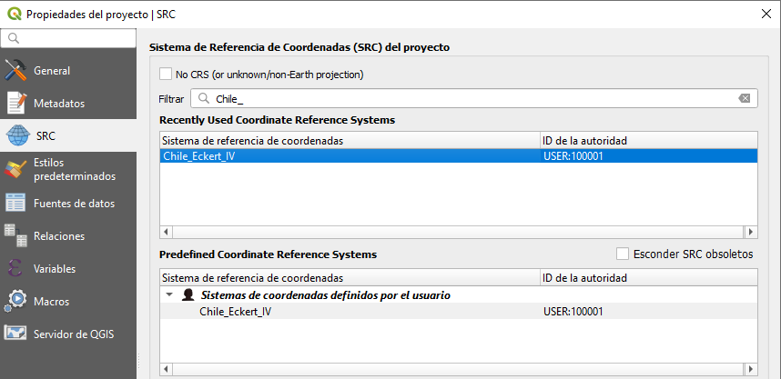
Expanda la entrada
Sistemas de coordenadas definidos por el usuario.Elija Chile_Eckert_IV.
Haga clic en Aceptar para configurar el SRC Es posible que deba hacer un zoom en la capa para ver todo el país (Figura siguiente).
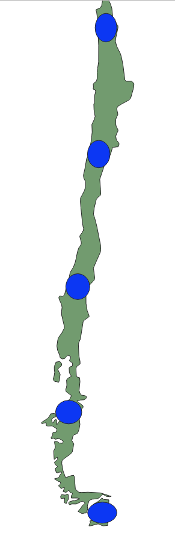
Esta es una mejora clara en la forma, pero todavía hay cierta inclinación. La proyección Eckert IV se usa principalmente para mapear el mundo entero. Para mapear países grandes, en latitudes altas, como Chile, otras proyecciones son más apropiadas.
Las proyecciones cónicas equidistantes son ejemplos de proyecciones adecuadas para mapear todo Chile.
Debido a que tiene dos paralelos estándar, la proyección cónica equidistante de Sudamérica es particularmente buena para países más grandes con una extensión norte-sur significativa. Probemosla para Chile.
Una vez más, abra las Propiedades del proyecto, seleccione la pestaña SRC y elija
South_America_Equidistant_Coniccomo SRC.Haga clic en Aceptar para configurar el SRC Es posible que deba hacer un zoom completo para ver todo el país (Figura siguiente).
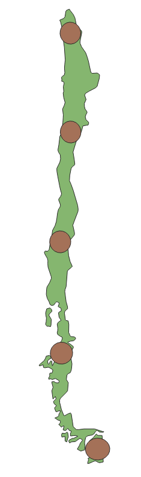
Esta proyección cónica puede tener como referencia uno o dos paralelos estándar. Como su nombre indica, todos los paralelos circulares son equidistantes a lo largo de los meridianos. Es así ya se utilicen uno o dos paralelos como estándar.
Hay muchas formas de personalizar este SRC. Puede personalizar una de las selecciones de proyección para que se centre en el área en cuestión, en este caso Chile, simplemente redefiniendo las configuraciones cartográficas particulares, como los meridianos centrales, los paralelos estándar, la latitud de referencia o falsas orientaciones este y norte. La elección de los parámetros varía según la proyección que se utilice.
Definamos brevemente estos términos y dónde se pueden modificar en los parámetros de SRC. Cada término irá seguido del parámetro en los parámetros de SRC dentro del paréntesis.
Nota: Proj es otro proyecto FOSS4G utilizado por QGIS, GDAL/OGR (datos vectoriales y raster). Este proyecto es para gestionar sistemas de coordenadas y proyecciones. Para obtener un manual de usuario detallado para el formato Proj utilizado para especificar los parámetros de SRC en QGIS, visite
https://proj.org/usage/projections.html
False easting (Falso este):en QGIS, el valor de la coordenada enxpara el origenx. Por ejemplo, si el meridiano central para su mapa proyectado es -96.00, y el falso este se establece en 0.00, entonces a todas las ubicaciones a lo largo de ese meridiano se les asigna un valor de 0.00. A todas las ubicaciones al oeste del meridiano central (origen x) se les asigna un valor negativo, y a todas las ubicaciones al este del meridiano central se les asigna un valor positivo, como en un plano cartesiano típico.False northing (Falso norte):en QGIS, el valor de la coordenada enypara el origeny. Por ejemplo, si la latitud de referencia para una proyección cónica es 37.00, a todas las ubicaciones a lo largo de ese paralelo se les asigna un valor de 0.00. A todas las ubicaciones al sur de la latitud de referencia (origen y) se les asigna un valor negativo, y a todas las ubicaciones al norte de la latitud de referencia se les asigna un valor positivo, como en un plano cartesiano típico.PRIMEM (Meridiano central):la longitud en la que se centra un mapa (origen x).Latitud of 1st/1nd standard paralell:la latitud en la que se centra un mapa (a veces el origen y), o para proyecciones cónicas, los paralelos a lo largo de los cuales el cono toca la tierra.Latitud of natural origen:la latitud en la que se centra un mapa (origen y).
Por ahora, dejaremos las configuraciones predeterminadas para el meridiano central, la latitud de origen, los paralelos estándar y el falso este y norte. Al establecer las proyecciones del mapa, la elección del esferoide, o elipsoide de referencia, también es una consideración importante. En este ejemplo, el esferoide está configurado actualmente en GRS_1980.
Esferoide (ellps):un modelo de la forma de la tierra utilizada para transformar una proyección.
El esferoide de referencia, o elipsoide, se genera al elegir las longitudes de los ejes mayor y menor que mejor se ajustan a los de la tierra real. Muchos de estos modelos son apropiados para diferentes ubicaciones en la tierra.
Estrechamente relacionado con el concepto del esferoide está el concepto del datum. El Datum norteamericano de 1927 (NAD27) usa el elipsoide de referencia Clarke 1866, mientras que el Datum norteamericano de 1983 (NAD83) usa el elipsoide de referencia del Sistema de referencia geodésico (GRS) 1980.
Datum (datum):selección y orientación de un esferoide específico para usar en una ubicación.Unidades de coordenadas (unidades):Las unidades de coordenadas se utilizan para definir distancias al establecer coordenadas x e y.
4.4 Actividad 4: Explorar el sistema de coordenadas Universal Transverse Mercator (UTM)
La cuadrícula Universal Transverse Mercator (UTM) (que se muestra en la figura a continuación) es un sistema de coordenadas planas que abarca casi todo el globo. Es probablemente el sistema de coordenadas plano más conocido de alcance internacional. Para el sistema UTM, el globo está dividido en sesenta zonas, cada una de seis grados de longitud. Cada zona tiene su propio meridiano central. Los límites de cada zona son 84 grados norte y 80 grados sur. UTM utiliza la proyección transversal de Mercator. Las zonas están numeradas del 1 al 60, donde la zona 1 comienza en -180° de longitud y las zonas aumentan hacia el este de regreso a + 180° donde termina la zona 60.
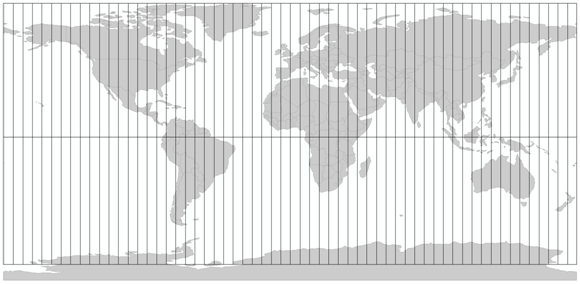
Existen versiones separadas de los archivos de proyecto QGIS de Chile y del Mundo con un tema de polígono UTM Zone. En cada documento de proyecto QGIS, el tema UTM está etiquetado con las zonas UTM para que pueda ver qué zonas cubren su parte del país.
Estos archivos del proyecto QGIS se denominan
Proyecto_Vista_Mundo_UTM.qgsyProyecto_Vista_Chile_UTM.qgsVisualize los proyectos, primero el mundial y luego el de Chile.
¿En qué SRC se encuentran?
Abre uno de estos proyectos. (por ejemplo: Proyecto | Abrir | Vista de país UTM.qgs)
Una vez que se abre el mapa, en el menú Proyecto, seleccione Propiedades del proyecto y abra la pestaña SRC.
A través del filtro, busque UTM. Elija una zona UTM en su parte del país para colocar el mapa. Hay definiciones UTM con diferentes datos.
Explore los diferentes SRC utilizados para Chile
- WGS84 UTM,
- PSAD56 UTM,
- SAD69.
5 Conclusión
En este taller, ha explorado sistemas de coordenadas y proyecciones de mapas. Cada proyección del mapa distorsiona la Tierra de manera diferente. Puede modificar las proyecciones de mapas proporcionadas en QGIS para satisfacer sus necesidades de mapeo. Es importante que establezca la proyección de mapa correcta para cada capa de datos y para el proyecto.
Cuando importa datos espaciales en QGIS, debe conocer la proyección, si la hay, el sistema de cuadrícula y el dato, de sus datos. En su mayoría, encontrará los datos en grados decimales, es decir, coordenadas de latitud y longitud. Los mapas base con coordenadas subyacentes que son grados decimales geodésicos son los más versátiles al construir una base de datos de mapas. Es importante que si planea hacer un análisis espacial con sus datos, primero proyecte los datos en el mismo sistema de coordenadas para obtener la máxima precisión.